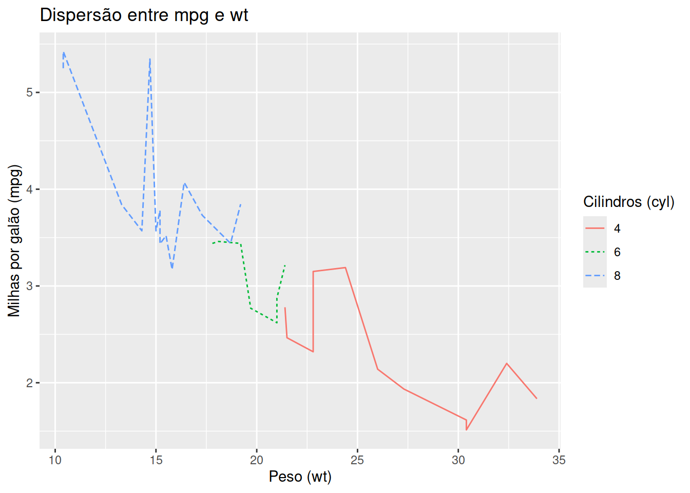

library(ggplot2)mtcars|>ggplot()+aes(x =mpg, y =wt, color =factor(cyl), linetype =factor(cyl))+geom_line()+labs(title="Dispersão entre mpg e wt", x="Peso (wt)", y="Milhas por galão (mpg)", color="Cilindros (cyl)", linetype="Cilindros (cyl)")

Códigos
R
x<-1:10x
[1] 1 2 3 4 5 6 7 8 9 10
R
y=10
Vamos definir uma varíavel y é 10.
Fim
Assim que funciona.
Referências
NASH, J. Non-cooperative Games. Annals of Mathematics, v. 54, n. 2, p. 286–295, 1951.
Código fonte
---title: "Quarto (aula)"author: "Alceu"date: "2024-06-06"date-format: longlang: pttheme: light: cosmo dark: slateformat: html: code-fold: true code-summary: "R" code-overflow: scroll code-tools: true code-line-numbers: false highlight-style: dracula code-link: truetoc: truetoc-depth: 2toc-title: "Sumário"bibliography: ref.bibcsl: ipea.cslparams: alpha: 0.1 ratio: 0.1---# QuartoQuarto enables you to weave together content and executable code into a finished document. To learn more about Quarto see <https://quarto.org>.```{r}head(iris)1+1mean(iris$Sepal.Length)```## GráficoSobre o [@nash51] é isso ou sobre Nash [-@nash51]:```{r plot2}library(ggplot2)mtcars |>ggplot() +aes(x = mpg,y = wt,color =factor(cyl),linetype =factor(cyl)) +geom_line() +labs(title="Dispersão entre mpg e wt",x="Peso (wt)",y="Milhas por galão (mpg)",color="Cilindros (cyl)",linetype="Cilindros (cyl)")```## Códigos```{r}x <-1:10x``````{r}y =10```Vamos definir uma varíavel `y` é `r y`.# FimAssim que funciona.